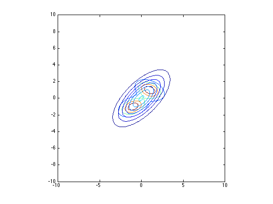
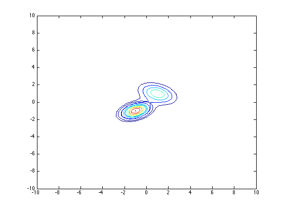
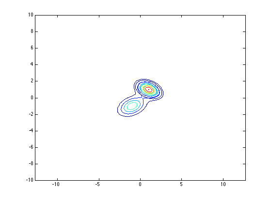

clear all
mu = [-1,-1; 1,1];
Sigma = zeros(2,2,2);
Sigma(:,:,1) = [1/2,1/4;1/4,1];
Sigma(:,:,2) = [1/2,-1/4;-1/4,1];
SigmaKL = [3,2;2,3];
x1 = [-10:0.1:10]';
x2 = x1;
n1 = length(x1);
n2 = length(x2);
f1 = zeros(n1,n2);
f2 = zeros(n1,n2);
klf = zeros(n1,n2);
kll = klf;
klr = klf;
for i=1:n1
f1(i,:) = mvnpdf([repmat(x1(i),n2,1),x2],mu(1,:),Sigma(:,:,1));
f2(i,:) = mvnpdf([repmat(x1(i),n2,1),x2],mu(2,:),Sigma(:,:,2));
klf(i,:) = mvnpdf([repmat(x1(i),n2,1),x2],zeros(1,2),SigmaKL);
kll(i,:) = mvnpdf([repmat(x1(i),n2,1),x2],mu(1,:),Sigma(:,:,1)*0.6);
klr(i,:) = mvnpdf([repmat(x1(i),n2,1),x2],mu(2,:),Sigma(:,:,2)*0.6);
end
f = f1 + f2;
figure
contour(x1,x2,f);
hold on;
contour(x1,x2,klf);
hold off;
axis square
printPmtkFigure('KLfwd')
figure
contour(x1,x2,f);
hold on;
contour(x1,x2,kll);
hold off;
printPmtkFigure('KLreverse1')
figure
contour(x1,x2,f);
hold on;
contour(x1,x2,klr);
hold off;
axis equal
printPmtkFigure('KLreverse1')
  